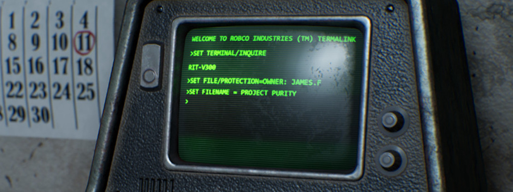
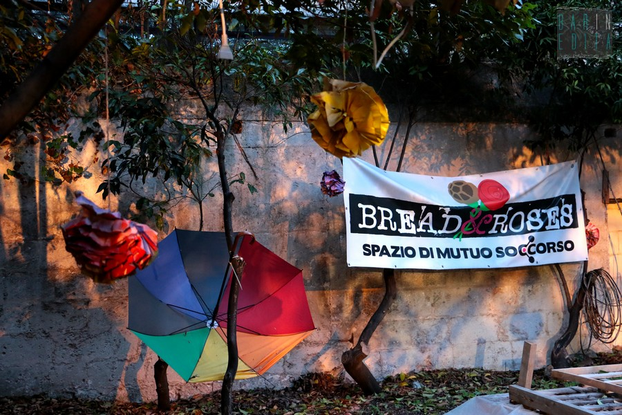
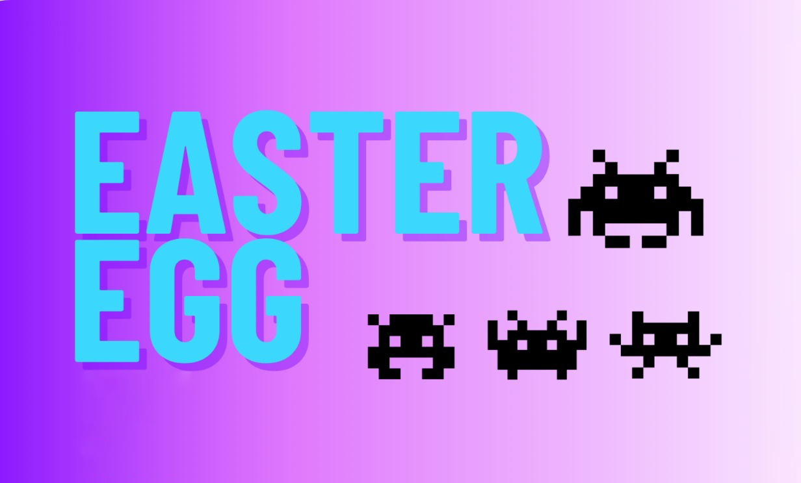
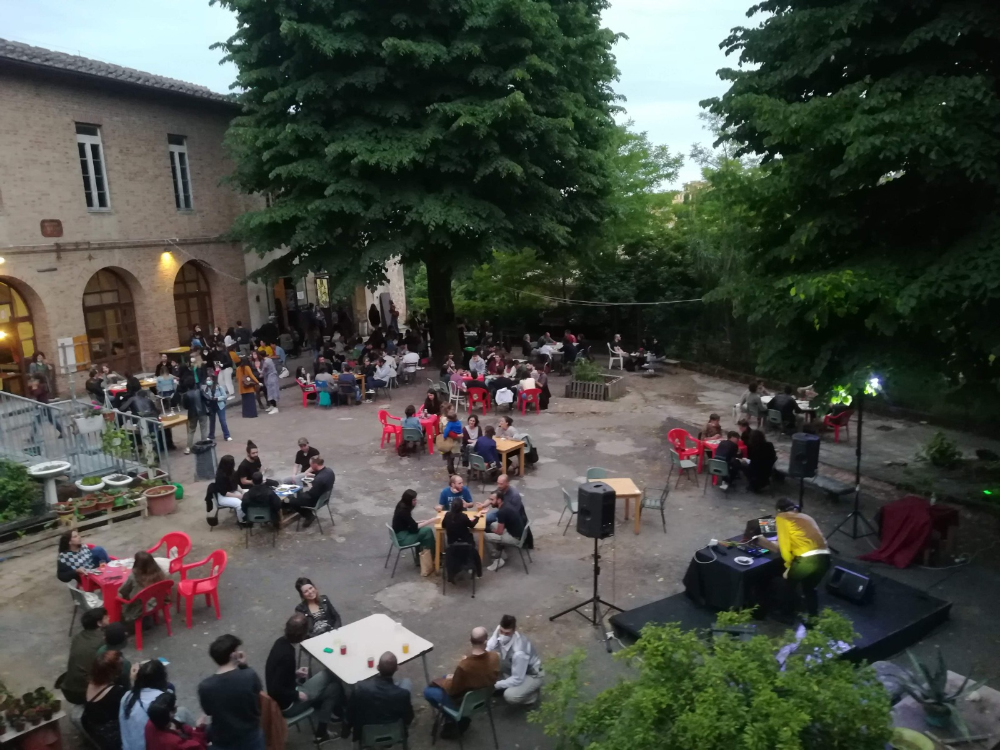
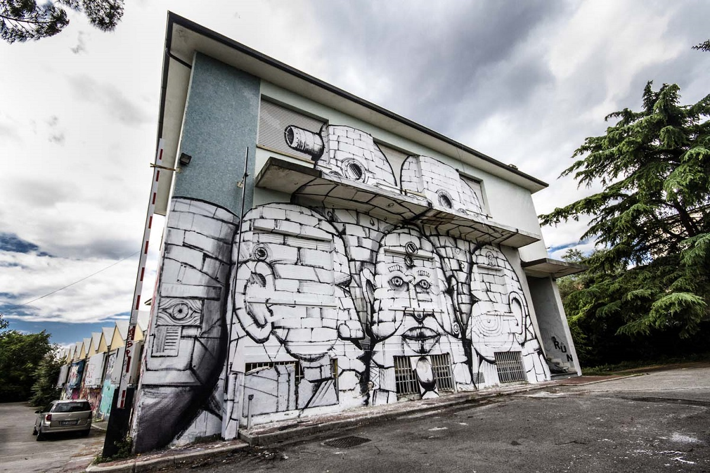

Vogliamo riaccendere la miccia di una forma di comunicazione ed
espressione potentissima, dando spazio a chi sviluppa, a chi vorrebbe
formarsi e iniziare a sviluppare, o anche solo a chi vuole giocare e
divertirsi.
Il mondo del videogioco in Italia
è sempre più monopolizzato dalle logiche del profitto. Viene raccontato
solo nei suoi aspetti commerciali e per questo il suo
potenziale sociale e sovversivo
viene disinnescato.
1.
Un evento accessibile e inclusivo in tutti i sensi. No barriere
economiche, architettoniche, geografiche, discriminatorie.
I videogiochi devono essere per tuttx.
2.
Un punto di incontro per chi
sviluppa giochi, a tutti i livelli. Sviluppatorx, romhacker, game
designer, etc.
3.
Un'occasione per
mostrare, testare, diffondere le
proprie opere.
4.
Un punto d'accesso non respingente per chi vorrebbe
entrare nel mondo dei videogiochi. Abbiamo bisogno di risorse e scambio di sapere. Pochissimx possono
permettersi i costi esorbitanti delle “università del videogioco”
presenti in Italia.
5.
Creare un ponte culturale con
l'underground videoludico di altri paesi, prediligendo quelli
solitamente esclusi dai discorsi mainstream sul videogioco (leggasi:
tutti quelli che non sono Europa, Stati Uniti, Cina e Giappone).
6.
Creare un'occasione gioiosa di socialità, incoraggiando nuove
alleanze e collaborazioni.
Siamo il
collettivo WARPO.
Non agiamo per fini di lucro. Non abbiamo sponsor. Ci finanziamo dal
basso. Vogliamo abbattere le barriere d'accesso al
mondo dei videogiochi.
I videogiochi sono per tuttx e
sono un mezzo di comunicazione potentissimo. Per questo l'accesso al
sapere necessario a crearli va diffuso il più possibile,
liberamente e gratuitamente.
Nella ZONA WARPA tuttx potranno esporre i loro giochi.
Gratis.
ZONA WARPA è una distorsione spazioculturale dove chi vuole fare giochi
incontra chi già li fa. È un
punto di accesso al mondo dello
sviluppo, dove la cultura videoludica è un
bene collettivo e non un
prodotto.
Conosciamoci, uniamoci, alleiamoci.
Riprendiamoci i videogiochi.
ZONA WARPA è un evento
antifascista, antisessista e antirazzista. Non è un evento for profit e tutte le persone che ci lavorano sono
volontarie. Abbi rispetto di tutte le persone che incontrerai.
I luoghi che ospitano ZONA WARPA non sono dei locali. Sono
spazi autogestiti e collettivi.
Abbi rispetto degli spazi. Non sporcarli, non rompere niente e non fare
nulla che possa disturbare o ostacolare le altre attività.
ZONA WARPA è un evento inclusivo,
nel senso che non esclude nessunx. Affinché lo sia, anche il tuo
comportamento dovrà essere umano e rispettoso. Rispetta l'identità e
l'espressione di genere altrui, l'orientamento sessuale, le disabilità,
le neurodivergenze, i corpi, le etnie, gli spazi.
La libertà è un bene collettivo: tutelala.
Essere gentili in un mondo cattivo è un
atto rivoluzionario. Qualsiasi
forma di violenza, intimidazione o molestia non sarà tollerata.
Se vedi atteggiamenti problematici o ne sei vittima, contatta un membro
del collettivo Warpo.
Zona Warpa è lieta di presentarvi la seconda edizione del tour per un
2024 ricco di eventi ed ospiti. Non vediamo l'ora di warpare con voi,
passate a trovarci!
ORARI
Tutte le Zone Warpe apriranno le porte al pubblico alle 15:00.
Noi saremo sul posto molto prima (indicativamente per le
12:00-13:00).
Se avete workshop/talk/giochi da esporre vi invitiamo a essere presenti
dalle 14:00. Se poi arrivate prima, ancora meglio.
Se non avete modo di arrivare così presto, cercate di essere sul posto
almeno un'ora prima del vostro intervento. Se avete problemi,
contattateci pure all'indirizzo
ciao@zonawarpa.it
Se avete offerto il vostro aiuto come volontarx (o volete offrirlo),
presentatevi quando volete. Prima arrivate, meglio è! Avremo tantissime
cose da fare e ogni aiuto sarà prezioso.
PROGRAMMA
Per consultare il programma di Milano 2024, clicca qui
Se terreai un workshop o un talk,
controlla di essere presente e guarda bene gli orari. Contattateci
in caso ci siano problemi o dimenticanze scrivendo a
ciao@zonawarpa.it
Ovviamente, vi invitiamo a condividere il programma e i vostri
interventi su qualsiasi piattaforma social preferiate e nel mondo reale.
PER CHI ESPONE UN GIOCO
Zona Warpa vi fornirà un tavolo e della corrente elettrica (ma se avete
un tavolino da portare ci date una gran mano). Voi dovrete portare il
necessario per mostrare il vostro gioco (computer, controller, etc.). Vi
invitiamo anche a portare una ciabatta e una prolunga.
Potete allestire quando volete, ma prima arrivate, meglio è.
COMUNICAZIONE SOCIAL
Questo è il momento in cui più abbiamo bisogno di fare girare la voce.
Condividete il sito, il programma, parlate dell'evento alle vostre
persone care.
Sta per arrivare il nuovo flyer degli eventi e abbiamo già a
disposizione un comunicato stampa. Se scrivete su
giornali/siti/blog/zine, chiedetecelo pure a
ciao@zonawarpa.it.
È attivo anche il canale Telegram di Zona Warpa, che
useremo per tutte le comunicazioni logistiche dell'ultimo minuto e per
aggiornarvi sui progressi del tour.
Lo trovate qui. L'iscrizione è aperta a tuttx, quindi linkatelo in lungo e in largo.
le date del tour

Torchiera
evento
14.00 - 00.00
Il 21 e il 22 settembre Cascina Torchiera ospita l'ultima tappa dell'edizione 2024 di Zona Warpa. Due giornate di talk, workshop e musica, con uno spazio espositivo gratuito pieno di giochi e progetti indipendenti.
Ingresso offerta libera, consigliati 5 euro. Sottoscrizione non obbligatoria.
Spazio 2
Edizione Lite
a
evento
16.00 - 24.00
Zona Warpa arriva anche a Piacenza in versione Lite!
Potrete trovare una sala giochi con titoli underground, l'open jack, un momento in cui potrai collegare il tuo Game Boy e far ascoltare i tuoi pezzi agli altri, senza dimenticarci della serata chiptune con un ospite speciale: Chipzel!
Ti aspettiamo in Via 24 Maggio 51, Piacenza!

Bread & Roses
workshop & talks
15.00 - 19.30
Main speaker
21.00
concerto
22.00 - 00.00
Zona Warpa arriva per la prima volta a Bari, con due giorni di workshop,
talk, videogiochi e musica al Bread & Roses.
Zona Warpa arriva anche a L'Aquila in versione Lite, con tre giorni di festa!
Potrete trovare una sala giochi con titoli underground, workshop e talk condotti da Kenobit, Rico Uochi Toki, Francesco Raimondo, Nonmateria.com e Tab.Ula; senza dimenticarci dell'open jack, un momento in cui potrai collegare il tuo Game Boy e far ascoltare i tuoi pezzi agli altri.
Ti aspettiamo!
Forte Prenestino
workshop & talks
15.00 - 19.30
Main speaker
21.00
concerto
22.00 - 00.00
Per l'edizione 2024, Zona Warpa raddoppia con ben due giorni di
workshop, talk, videogiochi e musica al Forte Prenestino.
Zona Warpa arriva anche a Marzabotto in versione Lite, con due giorni di festa!
Potrete trovare una sala giochi con titoli underground, workshop e talk; senza dimenticarci dell'open jack, un momento in cui potrai collegare il tuo Game Boy e far ascoltare i tuoi pezzi agli altri.
Ingresso sottoscrizione
Ti aspettiamo!
Torchiera
evento
15.00 - 23.00
Domenica 3 Dicembre la Cascina Torchiera si trasformerà nella sala
giochi post nucleare più potente di tutti I tempi! Troverete, free to
play, una selezione di giochi (Retro e non) oltre che a poter provare
Versioni Beta e Progetti in sviluppo presentati dalle persone che li
hanno creati! Dalle 15:00 alle 23:00, tisane, camino, bevande spiritose,
tavoli e giochi stupefacenti; sottoscrizione 5 euro non obbligatoria
Circolo dev
evento
16.00 - 00.00
In attesa dell'edizione 2024, la Zona Warpa continuerà a girare l'Italia
in formato "Lite", ossia in una versione più leggera a livello
organizzativo. In questa prima ZONA WARPA Lite, troverete giochi e
sviluppatorx da tutta Italia, uno spazio espositivo gratuito per i
vostri giochi e un ambiente fatto apposta per scoprire progetti, persone
e potenziali collaborazioni. Il tutto sarà condito dalla musica di
nonmateria.com, Wario Pianesi e Kenobit.
Bisaboga
evento
16.00 - 00.00
Debutta il GIOSTRIOT, un piccolo spin-off della Zona Warpa, nel quale la
distorsione spazioculturale si manifesta sotto forma di uno spazio di
gioco collettivo, pieno di stimoli, idee, musica e soprattutto
videogiochi. Dalle 16 fino a notte!

Biblioteca di Carpenedo Bissuola
evento
14.00 - 20.00
Dopo l'esperienza estiva della ZONA WARPA, il collettivo ha collaborato
con la Biblioteca di Carpenedo Bissuola (VE) per dare vita a EASTER EGG,
una giornata di giochi in biblioteca, accompagnata da una selezione di
talk e workshop.
ex-opg
workshop
16.00 - 19.00
concerto
21.00 - 00.00
L'ultima tappa ufficiale del primo tour della Zona Warpa è stata a
Napoli, all'EX OPG, con talk, workshop, spazio espositivo gratuito e un
momento di gioco con DOBOTONE, portato da Videogamo, lo studio argentino
ospite della prima edizione. In chiusura: concerto chiptune con Kenobit
e Rico Uochi Toki.
forte prenestino
workshop
16.00 - 19.00
concerto
21.00 - 00.00
La tappa romana della Zona Warpa è stata al Forte Prenestino, con talk,
workshop, spazio espositivo gratuito e un momento di gioco con DOBOTONE,
portato da Videogamo, lo studio argentino ospite della prima edizione.
In chiusura: concerto chiptune con Kenobit e Rico Uochi Toki.
Ottobit Artlab
workshop
16.00 - 19.00
concerto
21.00 - 00.00
La terza tappa toscana è stata all'Ottobit Artlab, con talk, workshop,
spazio espositivo gratuito e un momento di gioco con DOBOTONE, portato
da Videogamo, lo studio argentino ospite della prima edizione. In
chiusura: concerto chiptune con Kenobit e Rico Uochi Toki.

corte dei miracoli
workshop
16.00 - 19.00
concerto
21.00 - 00.00
La seconda tappa toscana è stata alla Corte dei Miracoli, con talk,
workshop, spazio espositivo gratuito e un momento di gioco con DOBOTONE,
portato da Videogamo, lo studio argentino ospite della prima edizione.
In chiusura: concerto chiptune con Kenobit e Rico Uochi Toki.

next emerson
workshop
16.00 - 19.00
La prima tappa toscana è stata al Next Emerson, con talk, workshop,
spazio espositivo gratuito e un momento di gioco con DOBOTONE, portato
da Videogamo, lo studio argentino ospite della prima edizione. In
chiusura: concerto chiptune con Kenobit e Rico Uochi Toki.
buridda
workshop
16.00 - 19.00
concerto
21.00 - 00.00
Il camper Warpo si è manifestato a Genova, al Buridda, con talk,
workshop, spazio espositivo gratuito e un momento di gioco con DOBOTONE,
portato da Videogamo, lo studio argentino ospite della prima edizione.
In chiusura: concerto chiptune con Kenobit e Rico Uochi Toki.
torchiera
workshop
16.00 - 19.00
concerto
21.00 - 00.00
La distorsione spazioculturale della Zona Warpa è partita da Milano, in
Torchiera, con talk, workshop, spazio espositivo gratuito e un momento
di gioco con DOBOTONE, portato da Videogamo, lo studio argentino ospite
della prima edizione. In chiusura: concerto chiptune con Kenobit e Rico
Uochi Toki.